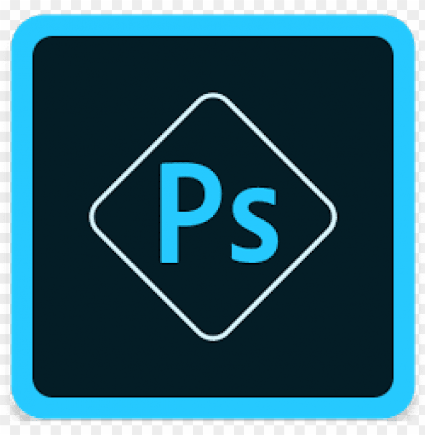

PAGINA CUPCAKES VICORIA
DESCRIPCION DEL PROYECTO
Proyecto de pagina web para empresa familiar de elaboración de cupcakes ubicada en Bogotá, para la pagina procuro emplear mi buen gusto en cuanto a la elección de los colores. Además, uso css grid layout para definir los espacios en el viewport, hago una edición de las imagenes con photoshop, y utilizo a git y gut hub para versionar el proyecto
CONOCIMIENTOS USADOS

HTML

CSS GRID LAYOUT

PHOTOSHOP

GIT Y GIT HUB